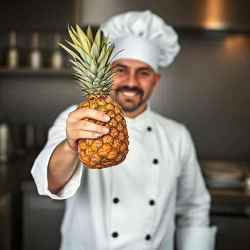
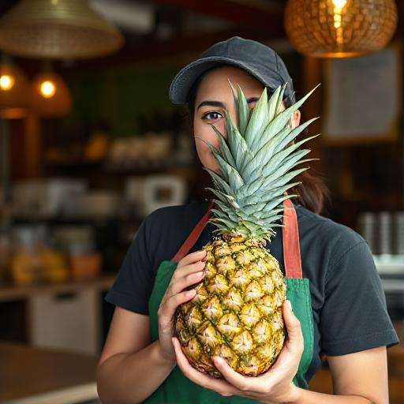

Startseite
Über Uns
Speisekarte
Events
Reservierungen
Kontakt
1952
: Gründung mit 20 Plätzen
Mehr Details
Eröffnung durch Familie Zufall
Kleine Speisekarte mit regionalen Gerichten, mit Fokus auf Ananashaltige Gerichte
1975
: Erste Renovierung, Erweiterung auf 50 Plätze
1998
: Sohn übernimmt das Restaurant, neue Küche eingebaut
Mehr Details
Modernisierung der Küchentechnik
Erweiterung der Speisekarte um internationale Gerichte, Alle Gerichte mit Ananas von der Speisekarte gestrichen
2010
: Gewinn des "Goldene Ananas" Awards (wow, wie lustig)
2020
: Online-Reservierung eingeführt
2023
: Weltbekannte Stiftung "Ban-Pineapple-from-Pizza" gegründet
Rainer Zufall

Küchenchef und Inhaber
Erfahrung:
25 Jahre
25 Jahre
Anna Nass

Serviceleitung
Erfahrung:
18 Jahre
18 Jahre